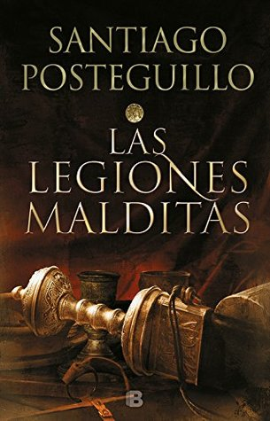

Las legiones malditas (Publio Cornelio Escipión #2)
Reseña por Jorge I. Zuluaga

Ver reseña en GoodReads (necesita cuenta)
Solo me quedan los antiadjetivos colombianos (suspenda aquí si es demasiado sensible): ¡qué chimba de novela! ¡hágame el hijueputa favor! ¡no mariqueen más leyendo reseñas y empiecen ahora mismo a leer esta trilogía!
Una de las cosas que más me sorprende de Posteguillo es cómo logra "cerrar" cada uno de los libros de la trilogía. Crear una historia completa, a la que parece no faltarle nada, cuando en realidad le falta todo el resto.
En el "Hijo del cónsul", como advertí en mi reseña, Posteguillo no logra contar toda la historia de la decisiva segunda guerra púnica, que enfrentó a Roma con la poderosa Cartago que estaba (según termino de enterarme) destinada a dominar Occidente casi desde el principio (¿qué lenguas hablaríamos hoy si lo hubiera logrado?).
La historia continúa en esta asombrosa novela, "Las legiones malditas", que, hasta la fecha de hoy, es la novela histórica más emocionante y sangrienta que he leído (antes había sido "Los asesinos del emperador" del mismo Posteguillo, aquí mi reseña respectiva). Me sorprendí a mí mismo brincando de la felicidad en algunos apartes (no quiero arruinarles la sorpresa, pero solo les digo que hay un caballo involucrado, je, je).
Lo que más me sorprendió: descubrir a Siracusa. Las descripciones que hace Posteguillo en la novela, como parte de la trama, de esta fantástica, culta y rica metrópoli, que superaba en grandeza y magnificencia a cualquier ciudad de la península itálica, incluyendo la misma Roma, es sencillamente asombrosa. Conocer, de la boca del personaje principal, algunos detalles de su historia y, como lo he dicho, descripciones detalladas de algunos de los asombrosos lugares de la ciudad, ha sido para mí revelador.
Y las batallas. ¡Las batallas! En "Las legiones malditas" leerán una continuación "en esteroides" de la fantástica habilidad que descubre uno en "El hijo del cónsul" (¡y en todas las novelas históricas de Posteguillo!) que tiene el autor para describir batallas épicas. E insisto: ¡qué batallas!
Eché de menos algo que Posteguillo sí hace al final en sus otras sagas: incluir un capítulo estrictamente dedicado a describir cuáles personajes son reales y cuáles ficticios. Aunque se adivinan los que son ficticios por su estatus social (esclavos, legionarios) y los que fueron de carne y hueso por su fama imperecedera (Plauto, Nevio, los mismos Escipión y Aníbal, Catón), quedan otros cuya existencia es menos segura (tribunos, políticos, líderes africanos, etc.).
¿Ya les dije que leyeran a Posteguillo? ¡Claro! Lo he hecho en las seis reseñas que ya he escrito y no me cansaré de repetirlo.